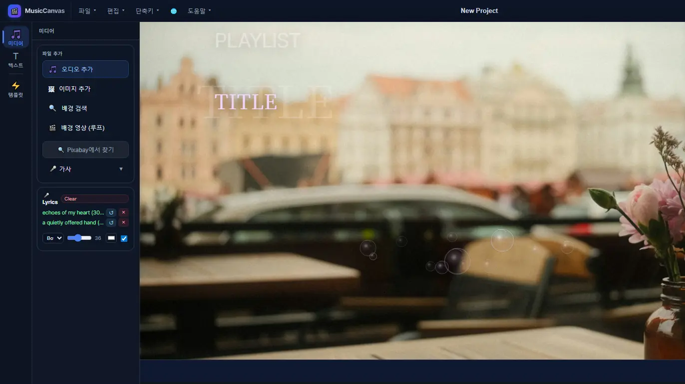
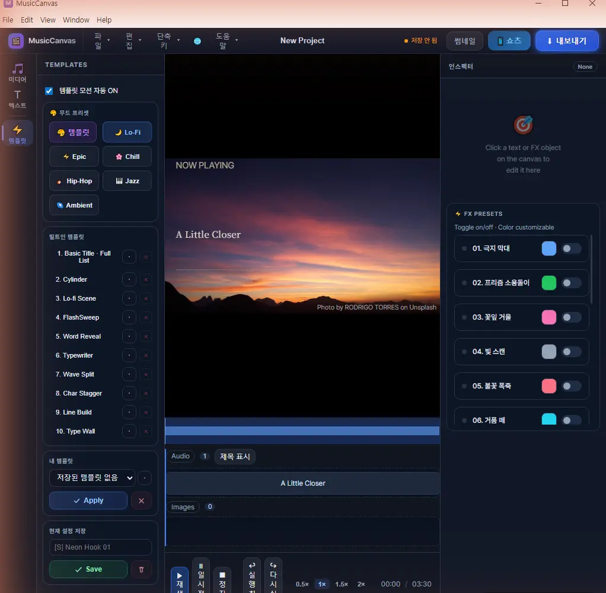
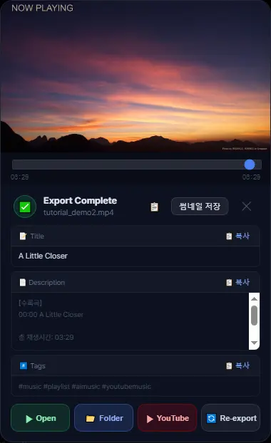

Windows · 7일 무료체험
Suno 음악을
유튜브 영상으로
곡과 이미지만 넣으면 가사, 이펙트, 제목까지 들어간 영상이 나와요.
MusicCanvas는 AI로 만든 음악을 유튜브용 뮤직비디오와 플레이리스트 영상으로 바꿔 주는 Windows 프로그램이에요. 월 구독 없이 한 번 결제해서 평생 써요.
- 7일무료체험
- $22평생 라이선스
- 1080p유튜브 영상
Gumroad에서 받아요. 체험 기간에는 결제 없이 써 볼 수 있어요.

곡과 이미지 넣기
수노에서 받은 mp3나 wav, 그리고 배경 이미지를 넣어요. 여러 곡을 넣으면 플레이리스트 영상이 돼요.
가사·텍스트·이펙트 고르기
무드 프리셋이나 텍스트 템플릿을 고르고, 가사를 불러오고, 오디오에 반응하는 이펙트를 켜요.
내보내고 업로드
MP4로 내보내면 제목, 설명, 태그가 같이 만들어져요. 복사해서 유튜브에 붙여 넣으면 끝이에요.
이런 기능이 들어 있어요
아래는 지금 판매 중인 버전에 들어 있는 기능이에요.
- FX
오디오에 반응하는 이펙트
음악의 소리 크기에 맞춰 움직이는 FX 프리셋이 14종 있어요. 색을 바꿀 수 있고, 켜고 끄는 건 한 번 클릭이에요. 보케나 빛 줄기 같은 영상 효과도 얹을 수 있어요.
- LYRICS
가사 싱크
곡 제목으로 가사를 자동 검색하거나 직접 붙여 넣고 .lrc 파일을 불러올 수 있어요. 수노 곡처럼 검색에 나오지 않는 곡은 무료 도구로 만든 가사 파일을 불러오면 돼요. 부른 부분이 색으로 채워지는 카라오케 효과도 있어요.
- TEXT
텍스트 템플릿
제목과 곡 목록을 보여 주는 템플릿이 10종 있어요. 타이프라이터, 글자 스태거, 실린더 같은 움직임이 들어 있고, 내가 만든 설정을 저장해 둘 수 있어요.
- MOOD
무드 프리셋 6종
Lo-Fi, Epic, Chill, Hip-Hop, Jazz, Ambient. 하나를 누르면 텍스트와 이펙트 조합이 한 번에 세팅돼요.
- BACKGROUND
이미지·영상 배경
내 이미지나 배경 검색 결과를 쓰거나, Pixabay에서 영상을 찾아 반복 재생 배경으로 쓸 수 있어요.
- PLAYLIST
여러 곡을 한 영상으로
곡을 여러 개 넣으면 이어 붙여 한 편으로 내보내요. 설명란에 넣을 곡 목록과 시간 표시가 자동으로 만들어져요.
- SHORTS
쇼츠 세로 영상
1080×1920 세로 영상으로 따로 내보낼 수 있어요. 하이라이트 구간을 자동으로 찾고, 맨 앞에 넣을 문구도 정할 수 있어요.
- UPLOAD
업로드용 정보 자동 생성
내보내기가 끝나면 제목, 설명, 태그를 만들어 복사 버튼과 함께 보여 줘요. 썸네일 이미지도 바로 저장할 수 있어요.
- RESUME
이어서 내보내기
긴 영상을 내보내다 멈춰도 처음부터 다시 하지 않아요. 만들어 둔 부분은 두고 이어서 내보내요.
- LANGUAGE
4개 언어 화면
화면 언어를 한국어, 영어, 일본어, 중국어 중에서 고를 수 있어요.
실제 화면
아래는 앱을 그대로 캡처한 화면이에요.


이런 분께 맞아요
잘 맞아요
- 수노나 다른 AI 도구로 만든 곡을 유튜브에 올리는 분
- 곡을 여러 개 묶어 플레이리스트 영상을 만드는 분
- 영상 편집 프로그램을 따로 배우고 싶지 않은 분
- 월 구독 없이 한 번만 결제하고 싶은 분
미리 알아 두세요
- Windows 프로그램이에요. Mac과 모바일은 지원하지 않아요.
- 음악을 만들어 주는 프로그램이 아니에요. 곡은 따로 준비해야 해요.
- 그래픽카드 가속에 기대지 않고 렌더링해서, 긴 플레이리스트는 내보내는 데 시간이 걸려요. PC 사양에 따라 달라요.
- 가사 자동 검색과 Pixabay 검색은 인터넷 연결이 필요해요.
가격
- 월 구독이 없어요
- 결제 전에 7일 동안 써 볼 수 있어요
- 한국어, 영어, 일본어, 중국어 화면
- Gumroad와 Microsoft Store에서 받을 수 있어요
자주 묻는 질문
MusicCanvas는 무료인가요?
7일 동안은 결제 없이 써 볼 수 있어요. 그 뒤에 계속 쓰려면 라이선스를 사야 해요. 가격은 한 번에 $22이고 구독은 없어요.
수노(Suno)에서 만든 곡을 유튜브 영상으로 바꿀 수 있나요?
네. 수노에서 받은 mp3나 wav를 넣으면 돼요. 수노가 아니어도 오디오 파일이면 어떤 곡이든 쓸 수 있어요.
Mac에서도 쓸 수 있나요?
아니요. 지금은 Windows 프로그램만 제공해요.
곡을 만들어 주기도 하나요?
아니요. 음악은 수노 같은 도구로 따로 만들어야 해요. MusicCanvas는 완성된 곡을 영상으로 만드는 일을 해요.
여러 곡을 한 영상으로 만들 수 있나요?
네. 곡을 여러 개 넣으면 이어 붙여서 한 편으로 내보내요. 설명란에 넣을 곡 목록과 시작 시간도 자동으로 만들어져요.
내보내기는 얼마나 걸리나요?
곡 길이와 PC 사양에 따라 달라요. 정지 이미지 배경이 가장 빠르고, 영상 배경은 더 오래 걸려요. 중간에 멈춰도 이어서 내보낼 수 있어요.
유튜브에 자동으로 올려 주나요?
아니요. 업로드는 직접 해요. 내보내기가 끝나면 제목, 설명, 태그를 복사할 수 있게 만들어 줘요.
AI로 만든 음악을 유튜브에 올려도 되나요?
곡을 쓸 수 있는 권리는 곡을 만든 서비스의 요금제와 약관에 따라 달라요. 올리기 전에 직접 확인해 주세요. 유튜브는 AI로 만든 콘텐츠에 공개 표시를 요구하는 경우도 있어요.
어디에서 받나요?
Gumroad에서 7일 무료체험과 구매를 할 수 있고, Microsoft Store에서도 받을 수 있어요.
함께 쓰면 좋은 무료 도구
곡을 만들기 전과 영상을 올리기 전에 쓸 수 있는 도구예요. 모두 무료이고 가입이 필요 없어요.